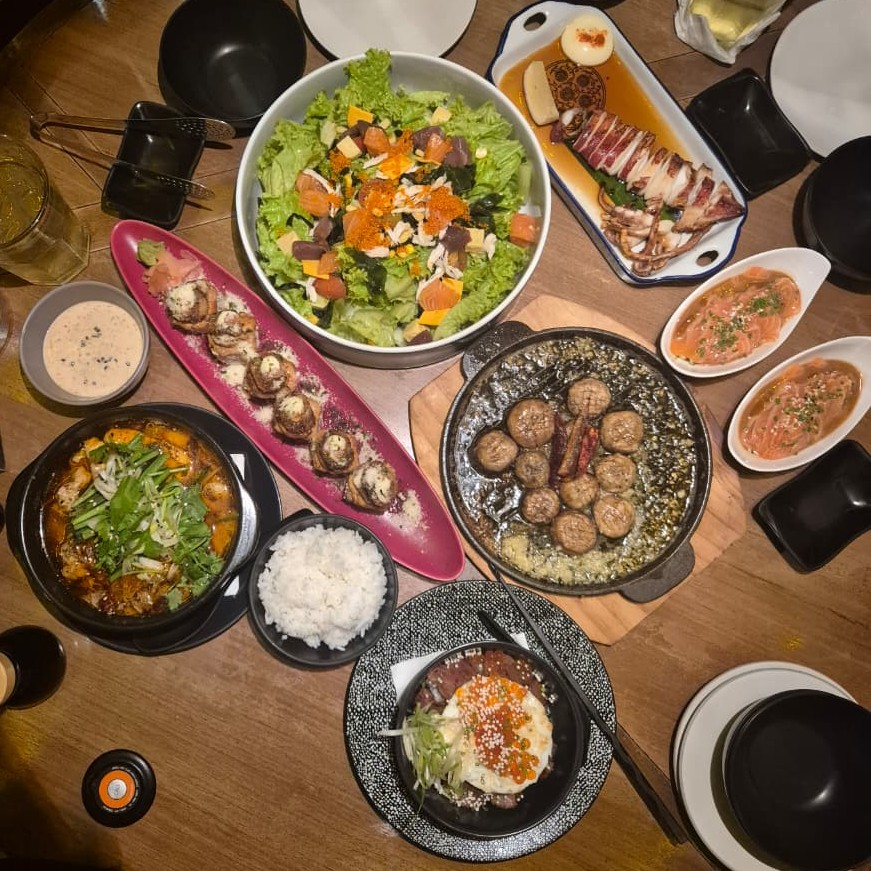
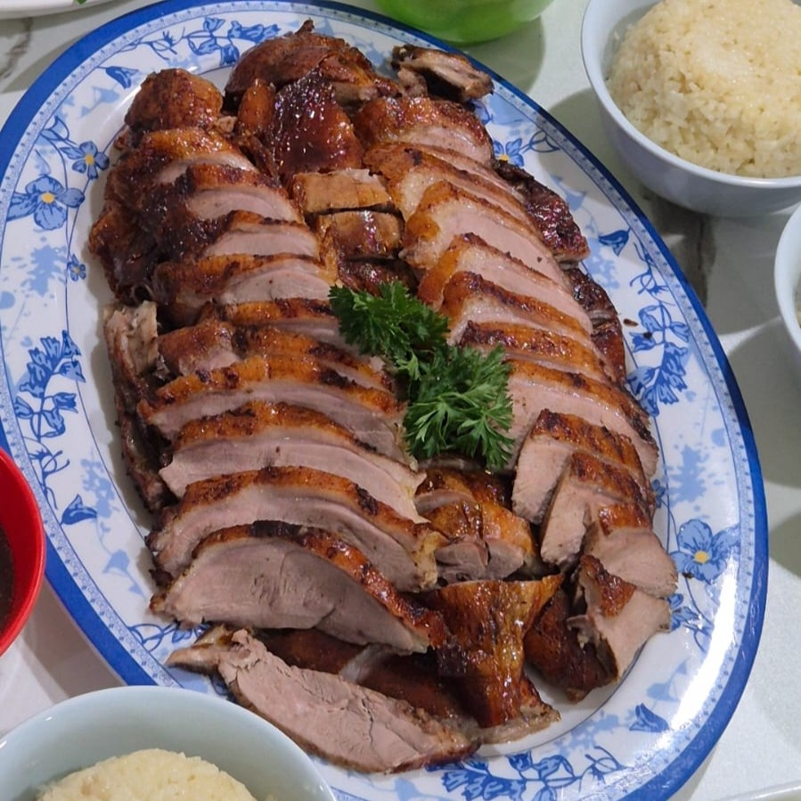
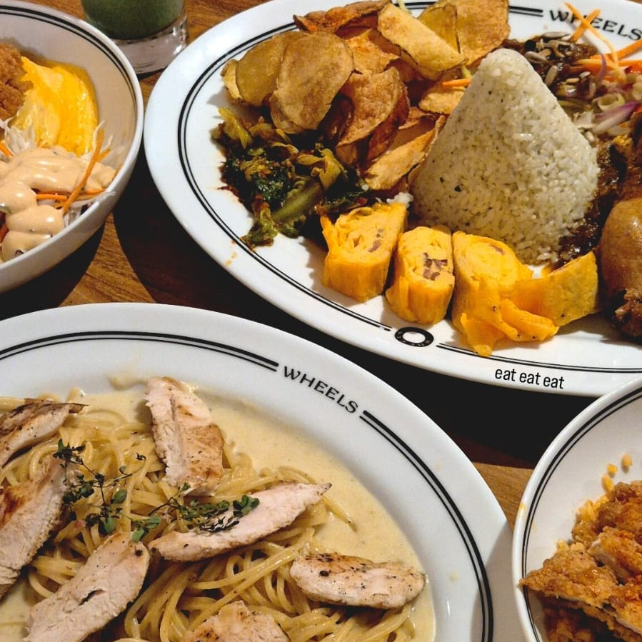
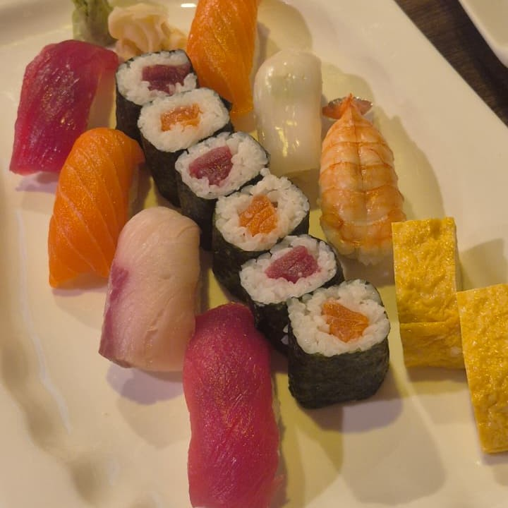

Every place I eat gets rated on taste, vibe, and price. Honest scores
only, so you know where to go and where to skip.
Sumibi Japanese Restaurant #1

Hidden GemPrivatBest Sushi in Cikarang
Taste 5/5
Vibe 5/5
Price 3/5
A place that's actually close but not many people know about. I
swear you have to try it and experience eating here, the number 1
sushi in Cikarang. And the best salmon tuna combo I've ever had. A
recommendation you have to try at least once in your lifetime.
The Duck House #2

Duck LoverViral
Taste 5/5
Vibe 5/5
Price 3/5
I just want to say this is the best Peking duck in Cikarang. Once
you try it, you'll definitely get hooked. This could be in the
category of food in Cikarang that you can't stop thinking about.
Wheels Coffe Roasters - Juanda(Dago) #3

Hidden GemTreat yourself
Taste 5/5
Vibe 4/5
Price 3/5
If you go to Bandung, you must come here besides the food that is
rich in spices. The vibe is totally scene. A must-visit
destination every time you return to Bandung.
Madoka Japanese Restaurant #4

suchiafter work
Taste 5/5
Vibe 5/5
Price 3/5
The list of other most delicious sushi is here. If you work around
MM2100, this place is a template for eating after work. You can
build connections here.
Bornga Korea Restaurant #5
KoreanBBQ
Taste 5/5
Vibe 5/5
Price 3/5
a suitable place to hang out with your friends. everything here is
good, no debate. look at the samgetang that whets the appetite. I
suggest eating here to share because the portions are quite large